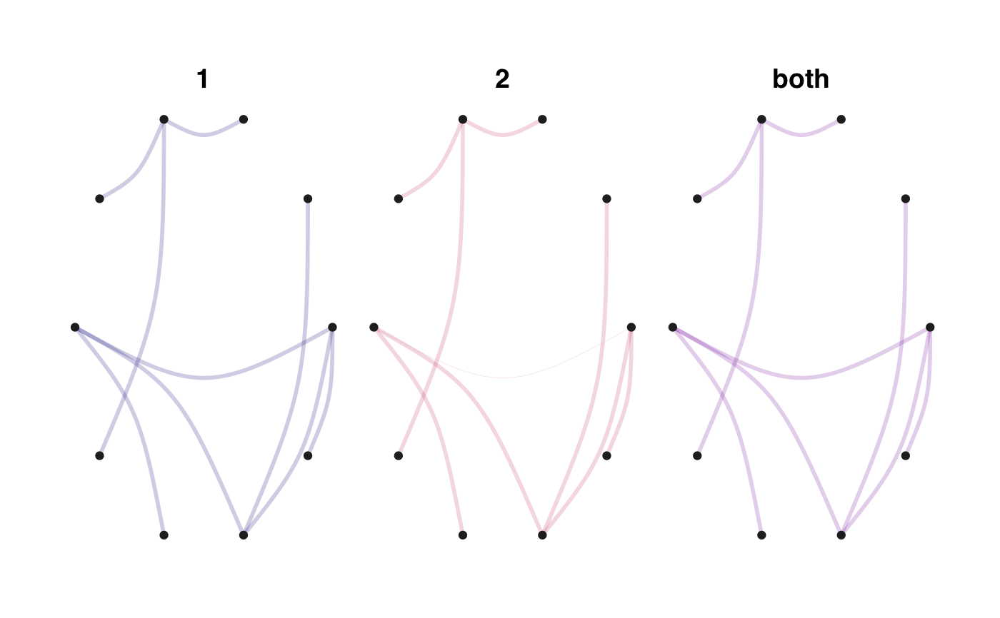

compar_graphs.RdPlots networks from several models
compar_graphs(allNets, curv = 0.2, width = 1, alpha = TRUE, Ft = 0, nodes_label = NULL, seed = 123, nb = 3, layout = "circle", base_model = NULL)
| allNets | tibble resulting of ComparEMtree() |
|---|---|
| curv | edges curvature |
| width | maximum width for the edges |
| alpha | if TRUE, sets to transparent the edges non-linked to nodes with high betweenness |
| Ft | Frequency threshold |
| nodes_label | optional label for the nodes |
| seed | optional seed for graph reproductibility |
| nb | sets the number of nodes selected by thresholding the beetweenness scores |
| layout | choice of layout for all networks among available layouts in `ggraph`. Default is "circle" |
| base_model | choice of referent model for the layout construction |
G the collection of networks as a ggplot2 object, with highlighted high betweenness nodes
graph_data list of data needed to plot the networks
n=30 p=10 S=3 Y=data_from_scratch("tree",p=p,n=n)$data X = data.frame(rnorm(n),rbinom(n,1,0.7)) threemodels=ComparEMtree(Y,X,models=list(1,2,c(1,2)), m_names=list("1","2","both"),Pt=0.3,S=S, cores=1)#> #> model 1 #> S= 1 #> Convergence took 0.06 secs and 3 iterations. #> S= 2 #> Convergence took 0.04 secs and 3 iterations. #> S= 3 #> Convergence took 0.06 secs and 3 iterations. #> model 2 #> S= 1 #> Convergence took 0.04 secs and 3 iterations. #> S= 2 #> Convergence took 0.04 secs and 3 iterations. #> S= 3 #> Convergence took 0.04 secs and 3 iterations. #> model both #> S= 1 #> Convergence took 0.05 secs and 3 iterations. #> S= 2 #> Convergence took 0.04 secs and 3 iterations. #> S= 3 #> Convergence took 0.06 secs and 3 iterations.compar_graphs(threemodels)#> $G#> #> $graph_data #> # A tibble: 3 x 2 #> . P #> <named list> <named list> #> 1 <df[,4] [45 × 4]> <tbl_grph> #> 2 <df[,4] [45 × 4]> <tbl_grph> #> 3 <df[,4] [45 × 4]> <tbl_grph> #>